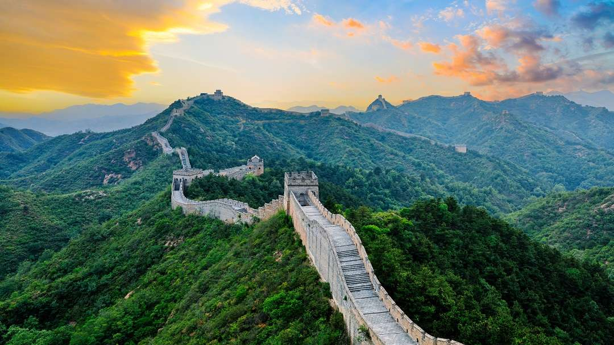

Самая известная компьютерная игра – Tetris – была создана русским
программистом Алексеем Пажитновым в 1985 году. Эта игра стала
популярной в Советском Союзе, а затем, в 1986-м году, на Западе.
У России самый большой в мире объѐм возобновляемых водных ресурсов,
4498 кубических километров.
Московский Кремль – самая большая в мире средневековая крепость. Полная
длина кремлевских стен составляет 2235 метров.
В России самый высокий в мире охват населения школьным образованием.
Русскую матрѐшку умелец Василий Звѐздочкин придумал в 1900-го году. В
том же году хитрые купцы показали еѐ на Всемирной выставке в Париже в качестве древнерусской игрушки и получили бронзовую медаль в номинации
«игрушки».
Испания
Испания является второй по величине страной в Европе после России.
Испания имеет самое большое количество Всемирного наследия ЮНЕСКО в мире, включая такие достопримечательности,
как Альгамбра, Саграда Фамилия и Акведук Сеговии.
Мадрид, столица Испании, является самой высокогорной столицей в Европе.
Метро в Мадриде считается вторым по длине в Европе и шестым в мире.
Его продолжительность составляет 141 милю, и это число продолжает расти.
Испания – единственная страна в Европе, где выращивают бананы.
Франция
Во Франции находится самое большое количество замков в мире — всего 4 969 штук.
Эйфелеву башню предполагалось снести через 20 лет после постройки, однако сначала на нее установили радиоантенны, а затем сооружение стало привлекать в город толпы туристов
– тогда разговорам о сносе окончательно пришел конец.
Франция также одна из самых густонаселенных европейских стран, уступающая в этом только Германии.
Во Франции существует 8 музеев, которые входят в топ самых часто посещаемых в мире.
Первый киносеанс был проведен в 1895 году на знаменитом бульваре, названном в честь имени женского монастыря – Капуцинок в столице Франции.
На Лазурном Берегу с 1946 года и по настоящее время ежегодно проводится самый популярный во всем мире кинофестиваль.
70% территории Японии покрыто горами,
в стране более 200 вулканов, и каждый год происходит около 1,500 землетрясений.
Японцы - известные трудоголики. Здесь считается нормой работать по 14-16 часов без перерыва.
Японская культура богата традициями, такими как чайная церемония,
фестивали, искусство и ремесла, а также уникальная мода.
Небольшие землетрясения действительно происходят в Японии все время, почти каждый день.
В японском языке существует множество различных диалектов, которые может быть достаточно трудно воспонимать. Стандартный японский язык,
который преподают в языковых школах, в основном, базируется на токийском диалекте (Эдо).
Китай
Китайский город Шанхай – крупнейший морской порт на Земле.
Китай – самое населенное государство мира. На его территории проживает около 1,4 млрд человек.
На территории Китая растет более 500 видов бамбука.
Жители Китая говорят на 7 диалектах китайского языка, которые отличаются настолько, что обитатели северных и южных регионов друг друга не поймут.
А вот письменность у них одна на всех.
Китайцы не едят сыр и творог, не пьют кефир и не перекусывают йогуртами. По одной из версий, жители Китая не употребляют в пищу молочные продукты, так как в течение многих веков позволить себе корову могли только самые богатые из них.

Индия
Индия является самой многоязычной страной в мире, где говорят более чем на 1,600 языках.
Здесь можно найти одно из семи чудес света - Тадж-Махал, великолепный мавзолей, построенный в 17 веке.
Индия является родиной шахматов, игра которая была изобретена здесь в 6 веке.
Коровы считаются священными животными в Индии и свободно разгуливают по улицам.
Индия является второй по численности населения страной в мире и, по прогнозам, обгонит Китай в ближайшие годы.
Северная и Южная Америка
Канада
В Канаде самая маленькая плотность населения в мире – на одном квадратном километре
площади в среднем проживают 3,5 человек.
В Канаде находится один из самых высоких в мире водопадов: высота Дела Фолс составляет 440м,
что значительно больше высоты Ниагары.
Канада является рекордсменом по количеству озер. На ее территории расположено около 3 млн. водоемов разной величины. Верхнее озеро в составе
Великих озер — самое большое на Земном шаре. Система Великих озер признана крупнейшим хранилищем пресной воды на планете;
Национальный символ страны — бобер.
Местные жители избегают «несчастливое» число 13: в многоквартирных домах нет 13-го этажа,
на парковке отсутствует место под таким номером, на 13 число календарного месяца никогда не планируются важные дела.
США
Хотя английский является наиболее распространенным языком, на федеральном уровне США не имеют официального государственного языка.
На сегодняшний момент официально признаны 556 племен индейцев, которые проживают в резервациях.
Располагаются они в основном на западе страны и суммарно занимают 2,3% площади США
Ежегодно на США обрушивается порядка 800 разрушительных торнадо
Около 10% американцев уверены, что не земля вращается вокруг Солнца, а все в точности да наоборот.
Символ США – Статуя Свободы – является подарком от Франции.
Бразилия
В Бразилии предусмотрен штраф, за то что человек не голосует на выборах.
Бразилия — единственная страна в Латинской Америке, где говорят на португальском языке
(практически во всех остальных странах официальный язык — испанский).
При этом формально не существует такого языка, как «бразильский»,
а есть только бразильская версия португальского языка, которая, впрочем,
имеет много отличий от европейской версии.
Тем не менее многие бразильцы называют свой язык «бразилейру», что дословно переводится как «бразильский».
Столица Бразилии — город Бразилиа, а не Рио-де-Жанейро, но управление страной происходит из двух «главных» городов страны — Рио и Сан-Паулу.
В Бразилии существует традиция встречать закат солнца аплодисментами.
Африка
Египед
Столица Египта, город Каир, является крупнейшим мегаполисом
на африканском континенте и одним из самых густонаселённых городов мира.
Пирамиды Гизы — одно из семи чудес света древнего мира,
сохранившихся до наших дней, были построены как гробницы для фараонов.
Река Нил, протекающая через Египет, считается самой длинной рекой в мире,
и на протяжении тысячелетий она обеспечивала плодородие земель в регионе.
Одним из символов современного Египта является Суэцкий канал, который соединяет Средиземное и Красное моря,
облегчая мировую торговлю.
Климат Египта — преимущественно сухой и пустынный,
с очень небольшим количеством осадков в течение года.
Конго
Республика Конго расположена в Центральной Африке, на западном берегу реки Конго.
Река Конго — самая глубокая в мире. Её длина составляет около 4700 км,
а глубина в некоторых местах достигает 250 метров.
Запрещен вывоз из Конго редких животных, попугаев, а также изделий из кожи, кости и перьев этих птиц и животных.
До 1960 года Конго была колонией Франции, французский язык и сейчас остаётся государственным языком страны.
Основная еда — маниока с рыбой или мясом.
Мадагаскар
Первые люди появились на Мадагаскаре около 10 тысяч лет назад. Формирование народов острова происходило в ходе многочисленных переселений
и ассимиляции выходцев из Восточной Африки, Индонезии и стран Арабского Востока.
С экономической точки зрения факты о Мадагаскаре демонстрируют,
что остров является относительно бедным по сравнению с остальной Африкой, и, соответственно,
со всем миром. Считается, что около 70% жителей страны живут за чертой бедности,
и многие выживают менее чем на 1 доллар в день.
90% всех животных острова не встречаются больше нигде.
Культура страны включает в себя 3 уникальных развлечения, которых нет ни в одной другой стране.
Популярное местное хобби — настольная игра под названием Фанорона.
Она была изобретена на Мадагаскаре и, хотя экспортирована во многие другие места и теперь доступна в виде онлайн-игры для людей,
она по-прежнему сохраняет свою популярность на острове.
Учитывая, что Мадагаскар довольно большая страна, у него относительно плохая инфраструктура.
Фактически, только 15% дорог в стране имеют надлежащее асфальтированное покрытие.
Большинство из них представляют собой грязевые тропы или заполнены выбоинами и другими опасностями.
Австралия и Океания
Австралия
В австралийских Альпах снега больше, чем в швейцарских.
В то время, как многие туристы посещают Австралию из-за потрясающих пляжей и солнечного света круглый год,
австралийские Альпы, простирающиеся через Новый Южный Уэльс и Викторию,
являются Меккой для любителей лыжного спорта. Снег обычно выпадает с июня по сентябрь.
Название Австралия было дано в 1824 году и происходит от слова «terra australis incognita»,
что означает «неизвестный южный остров».
90% австралийцев живут на побережье. Обширные пустыни Центральной Австралии означают,
что подавляющее большинство населения проживает на побережье этой огромной страны.
Кенгуру и эму выбраны в качестве двух животных на австралийском гербе,
поскольку они не могут идти назад, что отражает перспективную культуру.
На континенте Австралия и Океания есть 14 независимых государств.
Новая Зеландия
Из-за расположения в Южном полушарии зима в Новой Зеландии продолжается с июня по август, а лето – с декабря по февраль.
Дорожное движение здесь – левостороннее.
Символ государства – птица киви. Эти интересные животные проживают только в Новой Зеландии. Вы не встретите их ни в одной другой части света.
В этой стране расположена гора, имеющая самое длинное название на планете (82 буквы):
Тауматауакатангиангакоауауотаматеатурипукакапикимаунгахоронукупокануэнуакитанатаху.
В Новой Зеландии полностью отсутствуют змеи.
Папуа-Новая Гвинея
Папуа-Новая Гвинея – самое крупное государство Океании. Её площадь составляет 462 840 кв. км., что почти на 100 тыс. кв. км. больше площади Германии;
Население Папуа-Новой Гвинеи составляет почти 9 млн. человек. Примечательно, что в 1970 г. население страны составляло 2.5 млн. человек;
На территории Папуа-Новой Гвинеи насчитывается не менее 860 языков;
В Папуа-Новой Гвинее очень развито сельское хозяйство. Основа сельского хозяйства – какао, кофе и пальмовое масло.
Самая высокая точка Папуа-Новой Гвинеи – гора Вильгельм. Её высота составляет 4509 м.